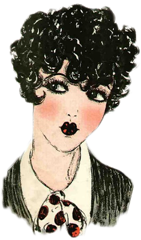

As you view the images of style in the 20s worn by women, make sure to read the short facts in the captions!
Simplicity was the trend in the 20s for womenWomen started wearing less jewelery than before the Edwardian era faded away'bobbed' hairstyles, cloche hats After the World War I the start of new style and culture was bornWomen who were free-spirited were referred to as "the flappers"Style was also influenced by jazz music!

the Roaring Twenties was a time of eleganceshorter, low-waisted dresses and revealing styles